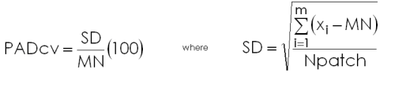

DESCRIPTION
r.li.patchAreaDistributionCV
calculates
as:

with:
- SD: standard deviation of patch area size
- MN: mean patch area size
- m: number of non-null attributes in the sampling area
- xi: number of cells of attribute i
- Npatch: number of patch
EXAMPLES
To calculate mean pixel attribute index on map my_map, using
my_conf configuration file and saving results in
my_out file run:
r.li.meanPixelAttribute map=my_map conf=my_conf output=my_out
NOTES
Do not use absolute path names for output files. They are raster if
moving window disposition was selected, otherwise they are in
~/.r.li/output folder.
If input raster is not full of null values r.li.meanPixelAttribute returns a value >=0 that is PADcv.
If input raster is full of null values r.li.meanPixelAttribute returns -1.
If you want to have null values instead run
r.null setnull=-1 map=my_map
after index calculation.
SEE ALSO
r.li
AUTHORS
Serena Pallecchi student of Computer Science University of Pisa (Italy).
Commission from Faunalia Pontedera (PI), Italy
BUGS
Please send bugs reports to pallecch@cli.di.unipi.it